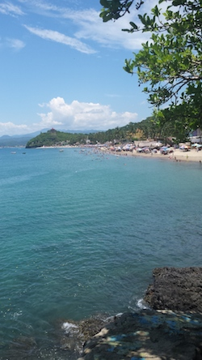
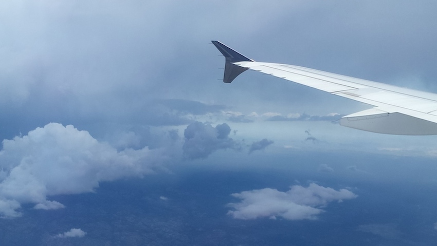
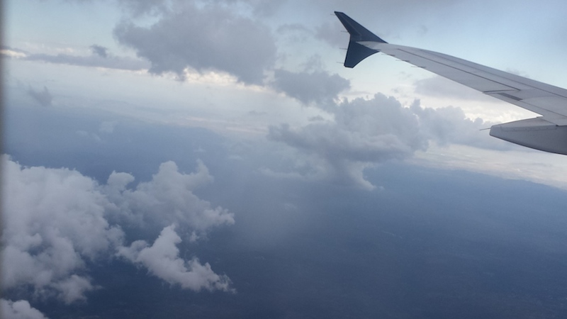
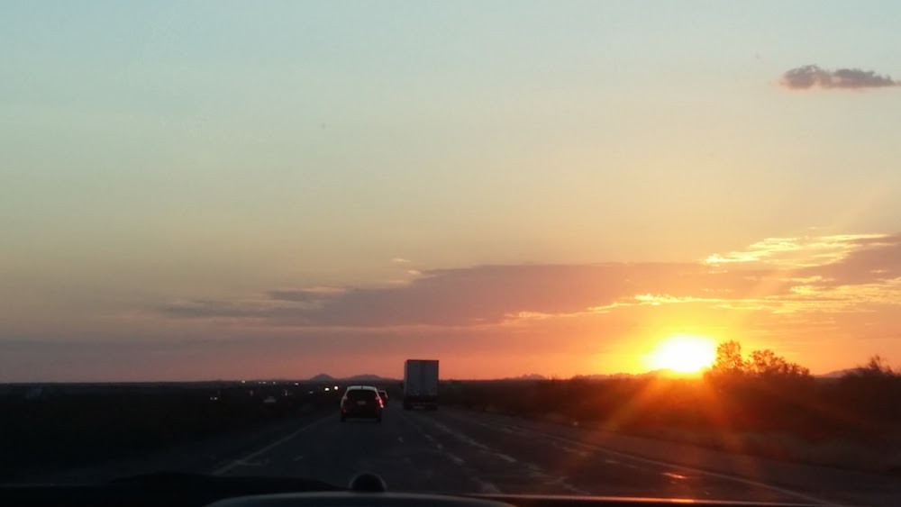
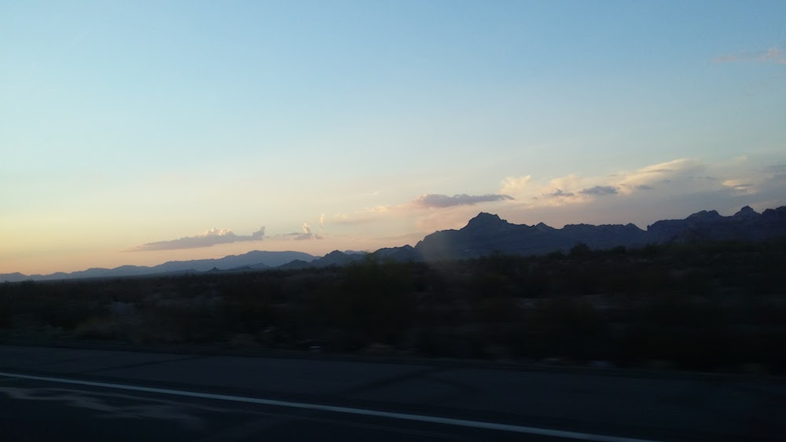
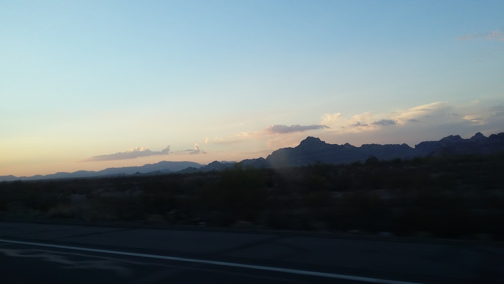

Last year after learning photography techniques a ray of inspiration hit me and I began to take pictures everywhere I went. I was lucky enough to travel often so I was able to take various photos. These are some of my favorite pictures:
    
